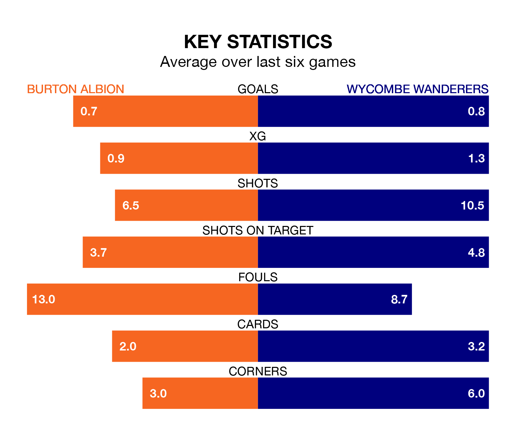

Wycombe Wanderers travel to Burton Albion on Saturday in EFL League One.
The visitors come into the game on the back of a win in their last match, having beaten Bristol Rovers 3-2 at home, with goals from Sam Vokes, Ryan Tafazolli and Luke Leahy.
The Brewers, meanwhile, lost their last match, 1-0 against Bolton Wanderers.
Burton are 20th in the table after 25 games, of which they have won seven and drawn six, earning 27 points.
Wycombe are three places ahead of Albion in 17th, with seven wins and seven draws putting them on 28 points.
With 20 goals in 25 games so far this season, the Brewers are scoring at below the league average rate with 0.8 goals per game. And they are conceding more than average, letting in 34 goals at a rate of 1.4 per game.
Wanderers are also below average scorers, with 1.2 goals per game, compared to a league average of 1.3. They have conceded 1.4 goals per game.
The home side are in mixed form in EFL League One, with two wins and a draw from their last six games.
With a win and three draws over that period, the Chairboys's form is slightly worse – they have taken six points from 18, compared to Burton's seven.
In the last five years, Burton and Wycombe have played each other on seven occasions. Burton won two of them, Wycombe four, and they drew once.
On average, the Brewers scored 1.3 goals and the Chairboys 1.4 in those matches.
Their last meeting was on August 19, when they played out a 0-0 draw.
Updated: 12:57, 02/01/24